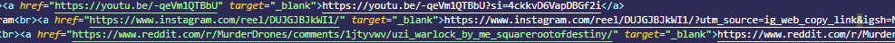

tl:dr is: it's safe to remove the parts of the url from "?" (including ?) to either the end of the link or up to "#" (not including #).
Parts of a url
I'm going to show 3 examples to go alongside breaking down each section, so you can learn to read them yourself, and figure out which parts can be cut out (if changes are made to the way these links work and this becomes outdated)
YouTube
https://youtu.be/-qeVm1QTBbU?si=4ckkvD6VapDBGf2i
https://www.instagram.com/reel/DUJGJBJkWI1/?utm_source=ig_web_copy_link&igsh=NTc4MTIwNjQ2YQ==
https://www.reddit.com/r/MurderDrones/comments/1jtyvwv/uzi_warlock_by_me_squarerootofdestiny/?utm_source=share&utm_medium=web3x&utm_name=web3xcss&utm_term=1&utm_content=share_button
(I don't really use Instagram, and then haven't been on Reddit in years, so just had to find random posts from those sites to use)
Each url is made up of sections, each representing a different function. Only one matters for the point i'm trying to make, but it's useful to have some idea of what each part does.
Scheme
The scheme is the very start of the url, determining the protocol the browser needs to use to fetch the items. For this situation it'll be focused on https. It could be http, although I would be careful using those pages as they are not secure, like https is (secure is what the s stands for). In all examples, the scheme is "https".Domain
This is the section that comes after the "://", and determines the web domain to search for. In our examples, the domain names are "youtu.be", "www.instagram.com" and "www.reddit.com". Youtube's link is a little different to the others, as it doesn't include "www." and doesn't end with ".com". This is because the "www." subdomain isn't necessary for a lot of websites these days (It's used to separate websites from other items that might have the same domain, for example another subdomain could be "mail."). The reason the YouTube link doesn't include ".com" is that instead it has a different top level domain (TLD), the ".be". Top level domains are just groupings of websites, for example this website is within the ".blog" group of domain names. The com is derived from the word commercial, as it was designed to be the commercial domain name. There are many other domain names out there, including ones for countries, which YouTube has employed here. The ".be" TLD is representative of the country Belgium, which Google bought and uses for shared links (although in my opinion it does look incredibly sketchy).Path
The path comes directly after the domain, and is encompassed on both sides by /, although sometimes urls can leave the closing one out; It'll still work without it, but having it there provides more clarity. Essentially, this works the same way as directories work on your computer.In the first example, the path is "/-qeVm1QTBbU". There is no closing /, but you are able to find it by looking for either the "?" or "#" symbols, in this case a "?" (more details on those symbols in the next section). The "-qeVm1QTBbU" is the unique id of the video the link should point to.
In the second example, the path is "/reel/DUJGJBJkWI1/". This is saying that the required page is within the "reel" folder, with the unique id "DUJGJBJkWI1".
In the final example, the path is "/r/MurderDrones/comments/1jtyvwv/uzi_warlock_by_me_squarerootofdestiny/". This shows the subreddit is Murder drones, and the name of the page is "uzi_warlock_by_me_squarerootofdestiny". This was taken from the share link, so i'm not sure why they have a "comments" folder, but it sure is there.
Finally, I wanted to give this article as an example for a pathway, which is "/general/Articles/urlTracking". I have my end set up so that this post is a file called "urlTracking.html", which is located within the "Articles" folder of the "general" folder.
Parameter
This is the section that is the existence for this blog post. While the rest of the sections are essential to correctly fetching a web page, the same cannot be said for the Parameter or Anchor sections.Parameters are attached to the url with the "?" symbol, last up to the end of a url (or the "#" symbol if one exists), and use "&" to separate each individual parameter. These are used by web forms on the server end of the webpage for various reasons, not always tracking, but that can be a use.
For YouTube, the Parameter is "si=4ckkvD6VapDBGf2i", which means that there is a variable named si that is set the value 4ckkvD6VapDBGf2i. Because the parameters are dealt with on the server side, without access to said servers there's no direct way to know what each parameter means, but I would like to show another example. For the YouTube search link "https://www.youtube.com/results?search_query=ENA", you can clearly see there is one parameter, that a variable called search_query is set to ENA (which is what i typed into the search bar).
Now, I can't confirm that YouTube doesn't use share links to track you, but why would YouTube have parameters clearly laid out in the case of search queries, where the user is expecting to see the search query in the url, but then in the case of share links there's just a small variable named si, which is set to a unique value based on the instantiation of the link? It feels very sketchy, especially given si could be interpreted as source indicator.
The one way to stop this from happening, is to delete anything that doesn't look right. You can remove everything from the YouTu.be url that comes after the ?, including the ?, and the link still works perfectly.
In the second example, the parameters are "utm_source=ig_web_copy_link&igsh=NTc4MTIwNjQ2YQ==", which can be laid out as variables named "utm_source" and "igsh", with the values "ig_web_copy_link" and "NTc4MTIwNjQ2YQ==" respectively. Again, I do not know for certain what code these are used to run, but what I do know is that you can share the link without any of these parameters, and it will still work completely fine.
This final example has the parameters "utm_source=share&utm_medium=web3x&utm_name=web3xcss&utm_term=1 &utm_content=share_button", which mean that it sends the variables "utm_source", "utm_medium", "utm_name", "utm_term" and "utm_content", with the respective values "share", "web3x", "web3xcss", "1" and "share_button". One of these variable names is shared with the instagram link, and this is because all of these parameters are UTM parameters, which are their own thing and used to track "the effectiveness of online marketing campaigns". This is as direct as it can get, that all this extra fluff on urls is there to track everything possible that it can from you.
Each of those links at the top of the page have the tracking data removed, and you can click on them to go to the correct webpages without issue.

Each of these links in green go to exactly the same places as the three links above, just without the also handing over any tracking data.
Anchor
Finally, there is the optional anchor property, which is used to locate a particular part of the webpage. None of these examples have them, but if you click here one will appear at the end of the url for this page. This feature searches for a html element with the id of the name referenced (in this case partsofaurl), and the browser will scroll to the element. Since on this page the "Parts of a url" subtitle has the "partsofaurl" id, it will be scrolled to. It's not essential, since it not being there means that there won't be any automatic scrolling when the page is loaded, but can be useful for longer webpages.To wrap up, all i'm trying to say is when you share links to wepages, you should probably remove the ? and anything after it. Sometimes it can be useful, like when sharing a YouTube video with a timestamp, where you'll have a parameter that looks like "t=192", where you can delete everything after the ? and before the "t=".
Decoding urls may sound complex, but by setting it out as different sections it can become trivial, and you can massively shorten the urls you share. I hope this at least helped you understand the process a bit more, and thank you for reading.